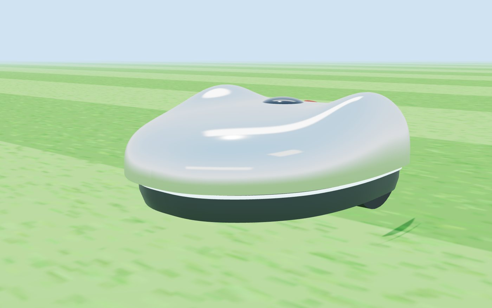

Too steep
The second ground hazard after drop-offs: a slope too steep to drive up, or to drive across without sliding. This post gives the robot a slope limit, two ways to see a steep bank coming, and a backstop for when it…
A robot lawn mower, built in the open
No cloud. No subscription. No app that stops working when a company changes its mind. Fauerbot mows your lawn, goes home to charge, and stops for a hedgehog. Every part of it is written down so you can fix it, change it, or build your own.

≈ $2,500
to a real robot mowing a real lawn
$0 raised
paid for by the founder. We're not asking for money yet.
1 of 5
goals reached
31 posts
in the devlog, mistakes included
The idea
Today you buy a robot mower and rent the rest: the app, the cloud, the updates. When any of those go away, the mower gets worse or stops. We think a machine that lives in your garden for years should belong to you.
No account, no cloud, no subscription. It runs on its own computer and keeps its records on your network.
Standard parts with a shopping list and prices. Open software you can read. A build manual for every step.
It doesn't mow at night, when hedgehogs are out. It stops for a ball, a hose or a child's foot. A big red button stops it, no app needed.
Every behaviour is tested on a virtual twin of the robot and the yard first, with a pass or fail report. Mistakes there cost nothing.
These numbers come from automated tests on the simulated robot. Real lawns are harder, which is what the goals below are for.
The goals
Each step has to pass its tests before the next one starts. The blade is the last thing to switch on, not the first.
A virtual robot in a virtual yard: mowing, charging, avoiding obstacles, handling faults. Over 100 automated tests.
The robot's brain and centimetre-accurate GPS, pushed around a real lawn by hand. It maps the edges. No motors, no blade.
A second-hand robot mower gets a new brain: an open-source controller board and our software. It drives the lawn and docks itself.
A 3D laser scanner, the same kind tested in simulation, so it can see a ball, a hose or an animal and stop.
Only after every item on the safety checklist passes: stop button, lift and tilt sensors, a hardware watchdog. Someone watches the first runs.
The chrome shell in the pictures, with our own frame, motors and battery. Only if the second-hand body holds us back.
Funds needed · prices checked 8–10 Nov 2026
These are real prices with sources. Nothing is padded, and the founder is paying for all of it for now. Everything is in US dollars, rounded; parts priced in euros are converted at an approximate $1.12 per € (Nov 2026).
| What | For | Cost |
|---|---|---|
| Raspberry Pi 5, centimetre GPS (RTK), motion sensor, storage | Goal 2: the robot's brain and senses | ≈ $500–700 |
| A used YardForce Classic 500 robot mower | Goal 3: a body, wheels, blade guard, battery and dock that already work (used listings) | ≈ $340 |
| OpenMower controller board kit | Goal 3: the open-source board that drives the motors (shop) | ≈ $250–340 |
| Livox Mid-360 3D lidar | Goal 4: seeing obstacles (list price) | $979 |
| Safety electronics: stop button, sensors, a small safety computer | Goal 5: the blade interlock (estimate) | ≈ $100 |
| Goals 2–5: a real robot mowing a real lawn | ≈ $2,200–2,500 | |
That's a different scale: safety certification for robot mowers, moulds for the body, product insurance and more people. We haven't put a number on it, because it would be a guess. We'll only look at it if enough people want one.
How to help
We'd rather show a working robot than ask for trust. What helps most right now costs nothing.
Every step is in the devlog, written as it happens, including what went wrong.
Know someone with a lawn and a soldering iron, or a robotics student? Send them this page.
Ideas for when there's a real robot: a course on building one, and a blade-free kit for builders. Ideas only: nothing is for sale and there are no prices.
Risks and challenges
Questions
No. Nothing is for sale. Today Fauerbot is a simulation, a set of plans and a devlog. The goals above are how it becomes a real robot.
Not yet. The founder is paying for goals 2 to 5. If we ever ask, it will be after there's a real robot to show, and we'll say exactly what the money is for, like the table above.
It's being designed for lawns with a clear view of the sky, because it finds its way with centimetre-accurate GPS. Narrow side passages under trees are the hardest case, and we'll test them on a real lawn in goal 2.
Eventually. The first real robot uses a ready-made board from OpenMower, an open-source project for converting robot mowers, because a board that's known to work is the fastest way to learn the mower's wiring. After that we plan to design our own board. It will have the hardware blade interlock built in and use parts anyone can buy. OpenMower publishes its YardForce board design under a licence that allows reuse, which saves most of the detective work. The options, compared.
No. It runs on its own computer. Two buttons on the robot start, pause, send it home and stop it. A phone app is planned for editing the map, and it will talk to the robot directly.
It doesn't mow between dusk and dawn, when hedgehogs are about. It stops for things it sees in its path. And it won't mow grass that's grown too long to spot a small animal in: it goes home and tells you instead.
Maybe. Ion, the one we're building first, is one of six first-pass designs: a small one for side passages, a four-wheel-drive one for rough ground, one on tracks for slopes, a wide twin-blade one for big lawns, and one with a sensor mast and a solar roof. Each is a profile the same software reads, and each passes a quick test in the simulator. Only Ion is being built. See the platforms.
Chris Fauerbach, a Python developer learning robotics, working with Claude as an AI pair-engineer. The devlog shows how.
For the curious
The simulation, the bugs it caught, the parts list, the wiring, the safety interlock and the 3D design, all in detail. And the six robot platforms one software stack runs, from the small Quark to the twin-blade Tachyon.
Latest from the devlog
One post per step, written as we go. Fair warning: they get technical. Follow along with the RSS feed.
The second ground hazard after drop-offs: a slope too steep to drive up, or to drive across without sliding. This post gives the robot a slope limit, two ways to see a steep bank coming, and a backstop for when it…
A mower can hurt itself, or someone near it, without hitting anything. The worst way is driving off an edge: a retaining wall, a step, a pond bank. A fall can't be undone. This post gives the robot two separate ways to…
The last post taught the robot to stop its blade before a garden path, as long as the path was on the map. If a path isn't drawn, or is drawn in the wrong place, the robot would mow straight over it. This post adds the…
A spinning blade on gravel or paving throws stones. Until now the robot avoided the problem by never leaving the lawn, so it couldn't cross a garden path, a patio or a driveway at all. That's the first of the three…
Last time, Vector was the one platform still failing its smoke test. It ran 16 to 18 cm off its path (the limit is 15), and its heading estimate was off by about 3° (the limit is 2°). We blamed its filter. The filter…
The first full smoke test of the six platforms had two failures, both at the dock: Tachyon never left it, and Vector mowed the patch and then missed the dock three times. Neither was about the dock. One was a clock, one…